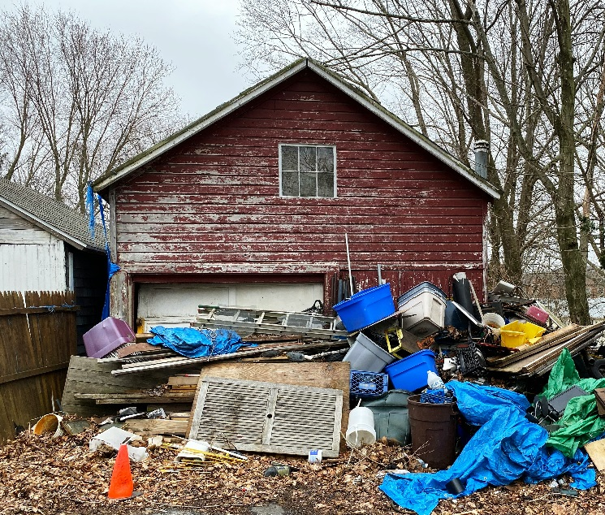

Residential
• Junk Removal
• Appliance/Furniture Disposal
• Home, Storage, & Estate Cleanouts
• Yard Debris Hauling
• E-Waste Recycling
• Marketplace Transport
Established to provide homeowners, landlords, and businesses throughout Port Angeles with safe and convenient junk removal and site cleanup services for messes big and small.
• Junk Removal
• Appliance/Furniture Disposal
• Home, Storage, & Estate Cleanouts
• Yard Debris Hauling
• E-Waste Recycling
• Marketplace Transport
• Office & Retail Cleanouts
• Tenant Turnover Cleanouts
• Warehouse & Storage Clearance
• Construction Debris Removal
• Light Demolition
• Labor-Only Services

We believe getting rid of unwanted clutter should be straightforward, dependable, and stress-free. From a single unwanted appliance to a complete property cleanout, we help clear the clutter and get your property back in shape.
We established our business to serve homeowners, landlords, property managers, and commercial customers who need a reliable partner for junk removal and property cleanup. Whether you're clearing out a garage, preparing a rental for its next tenant, or managing a larger cleanup project, we're ready to help.
From residential neighborhoods to rural properties and commercial sites in Port Angeles, our focus is on professional service, careful handling, and leaving properties cleaner than we found them.
Get in TouchGet your home, garage, yard, or storage space back. We provide residential junk hauling and cleanout services for homeowners throughout the greater Port Angeles area.
Full-service household junk removal in Port Angeles, including unwanted furniture, general household clutter, trash, and miscellaneous items from inside and around your home.
Convenient removal and hauling of refrigerators, washers, dryers, freezers, stoves, sofas, mattresses, dressers, dining tables, and other bulky household items. Specialized refrigerant handling is arranged through qualified providers when required.
Thorough garage, attic, basement, apartment, storage unit, and estate cleanouts. We help with large-scale decluttering, property transitions, and the careful removal of unwanted personal property.
Removal of fallen branches, brush, landscaping debris, old fencing, bagged leaves, and general outdoor cleanup materials from residential and rural properties.
Collection and responsible disposal or recycling of unwanted televisions, computers, monitors, printers, and electronic accessories.
Transport of online marketplace purchases including pick up and delivery to your home or storage unit.
Dependable commercial junk removal and property cleanout services for businesses, landlords, property managers, and real estate professionals.
Removal of office furniture, desks, cubicles, filing cabinets, retail fixtures, shelving, unwanted inventory, and general commercial debris.
Rental property and apartment cleanouts involving abandoned furniture, household junk, trash, and unwanted belongings. Helping landlords prepare rental units for their next occupants.
Bulk junk hauling for warehouses, storage facilities, and commercial properties, including pallets, shelving, obsolete inventory, packaging, and accumulated debris.
Flexible cleanup support for contractors, remodelers, homeowners, and property owners managing renovation and improvement projects.
Hauling of remodeling and renovation debris, including drywall, scrap lumber, old flooring, tile, roofing materials, and general construction waste.
Small-scale demolition and hauling of old sheds, deck sections, hot tubs, and other eligible structures or materials. Concrete removal is subject to weight, access, and disposal requirements.
On-site lifting, furniture rearrangement, loading, unloading, and general cleanup labor when you need an extra set of hands without transportation.
No job is too small to ask about. Tell us what needs to go and we'll help you take the next step.
Ask UsWe want every customer to feel confident that their property and cleanup project are in good hands.
"These guys cleared out ten years of clutter from our garage in under an hour. They arrived on time, offered fair upfront pricing, and even swept the floor clean before leaving."
"Super fast and friendly crew! They hauled a heavy sectional and an old freezer out of our basement without leaving a single scuff on our freshly painted walls."
"Lifesavers for property managers. They cleared out a messy rental unit the very next morning, sent me photos of the empty rooms, and saved me days of lost rent."
Have we helped with your cleanup project?
Leave Us a Google Review →Have questions or need help determining the right service? Contact us or schedule your cleanup online.
Send us a message about your project and we'll follow up with you.
Skip the back-and-forth. Use our online scheduling system to tell us about your cleanup project and request an appointment.
Schedule Service Online booking availability is subject to confirmation.